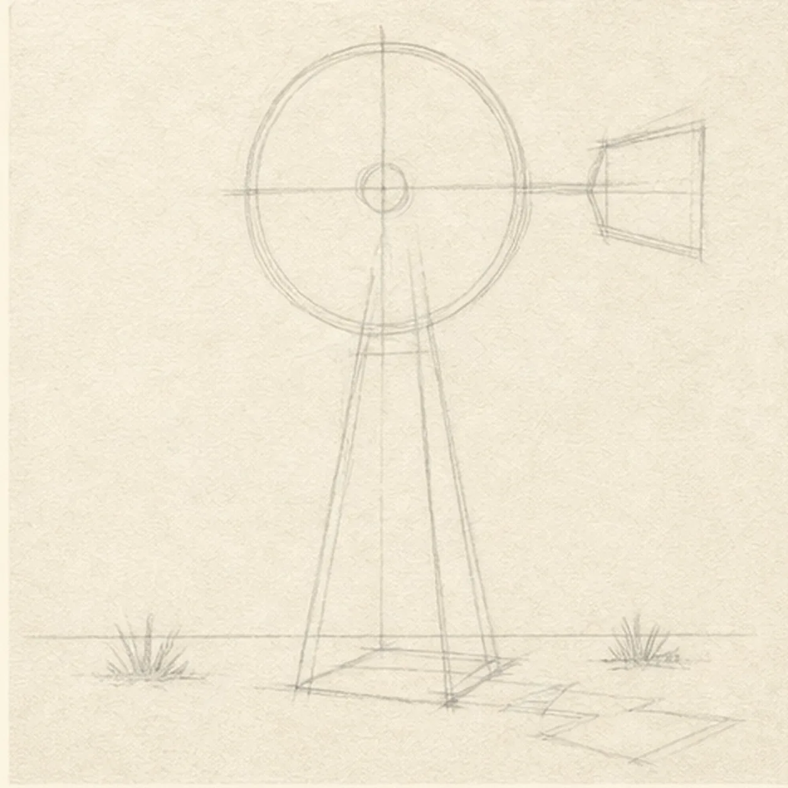
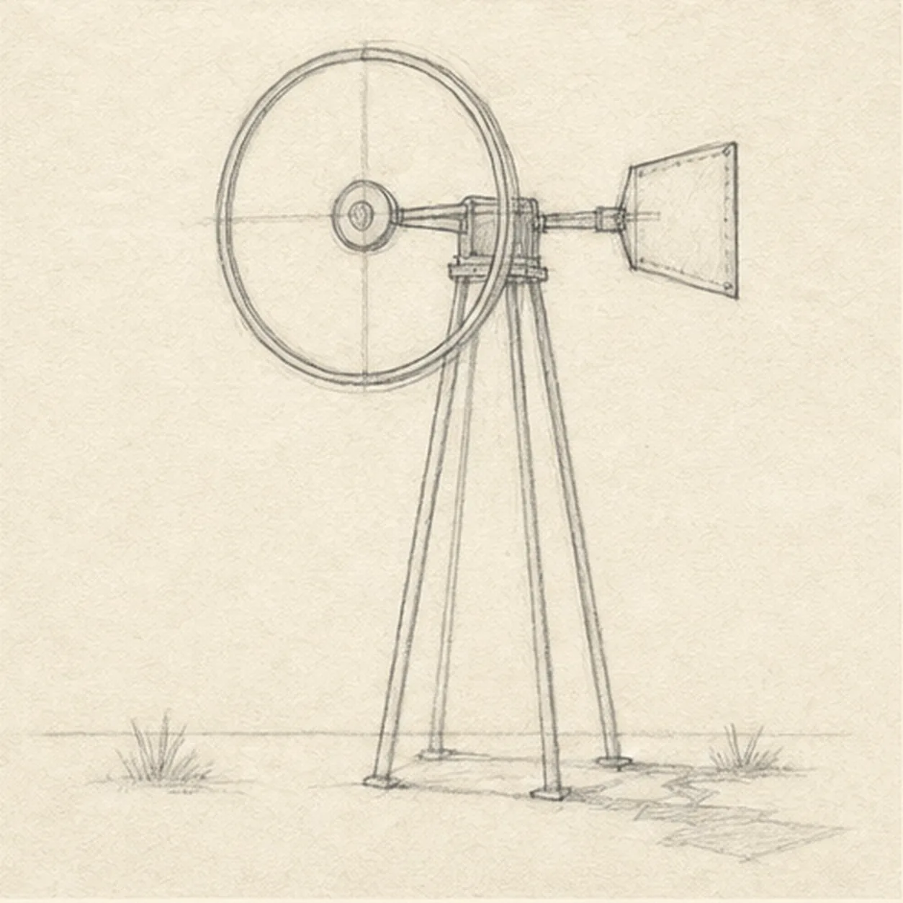
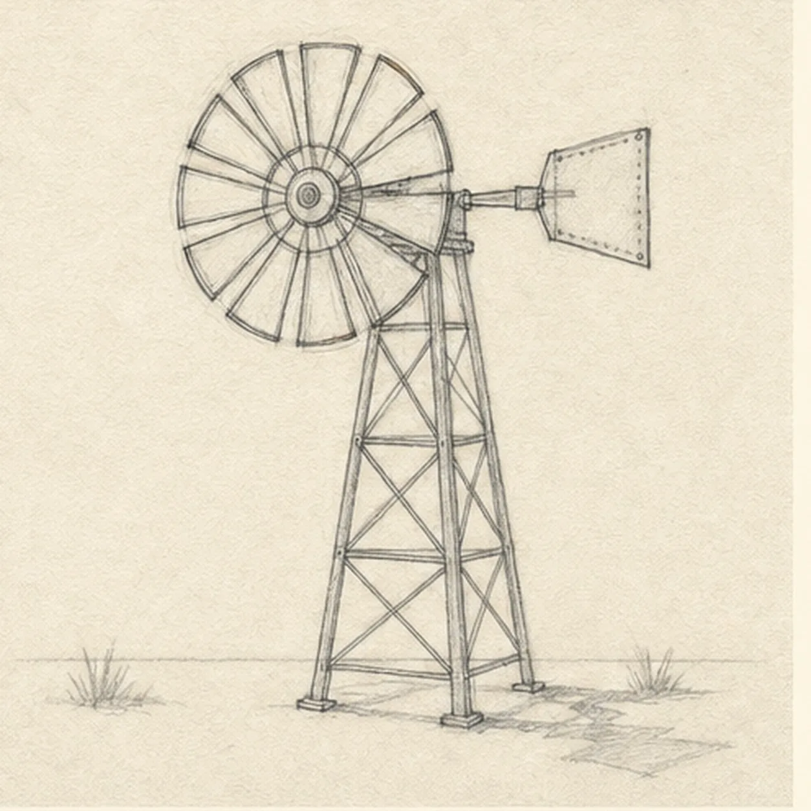
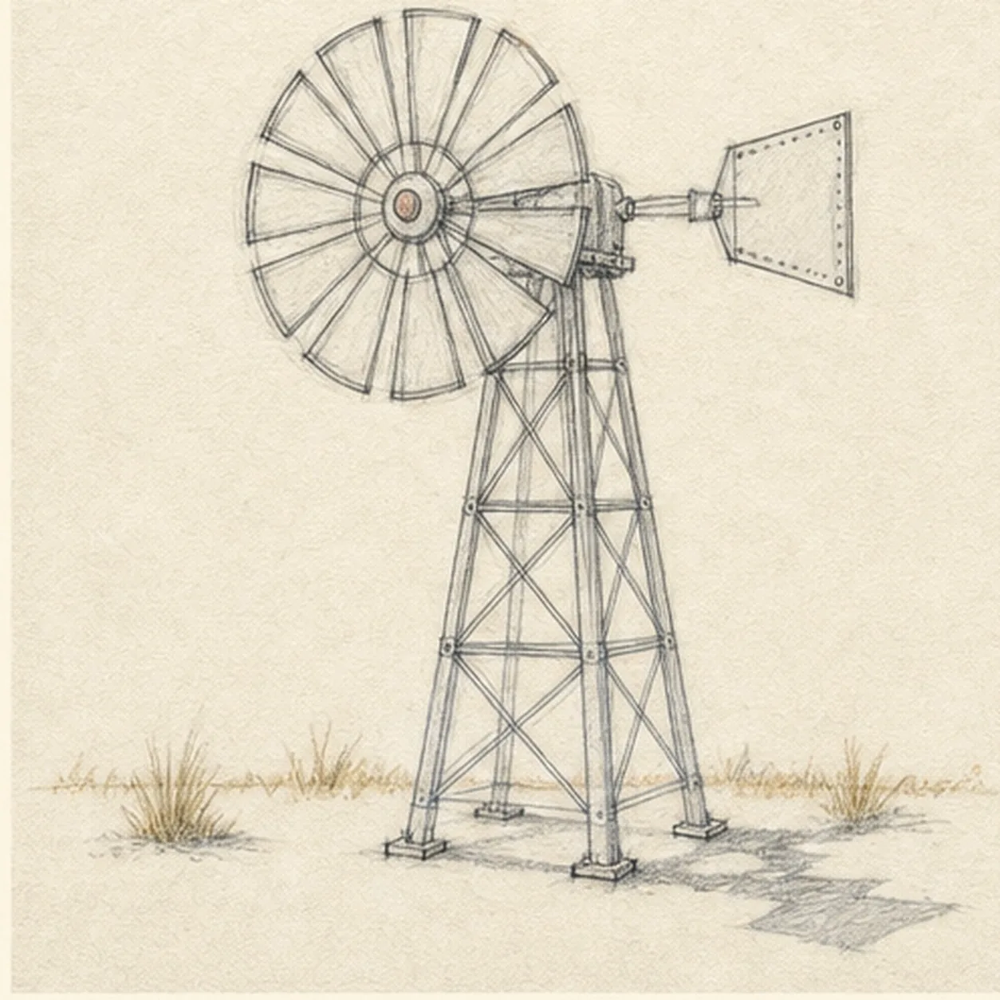
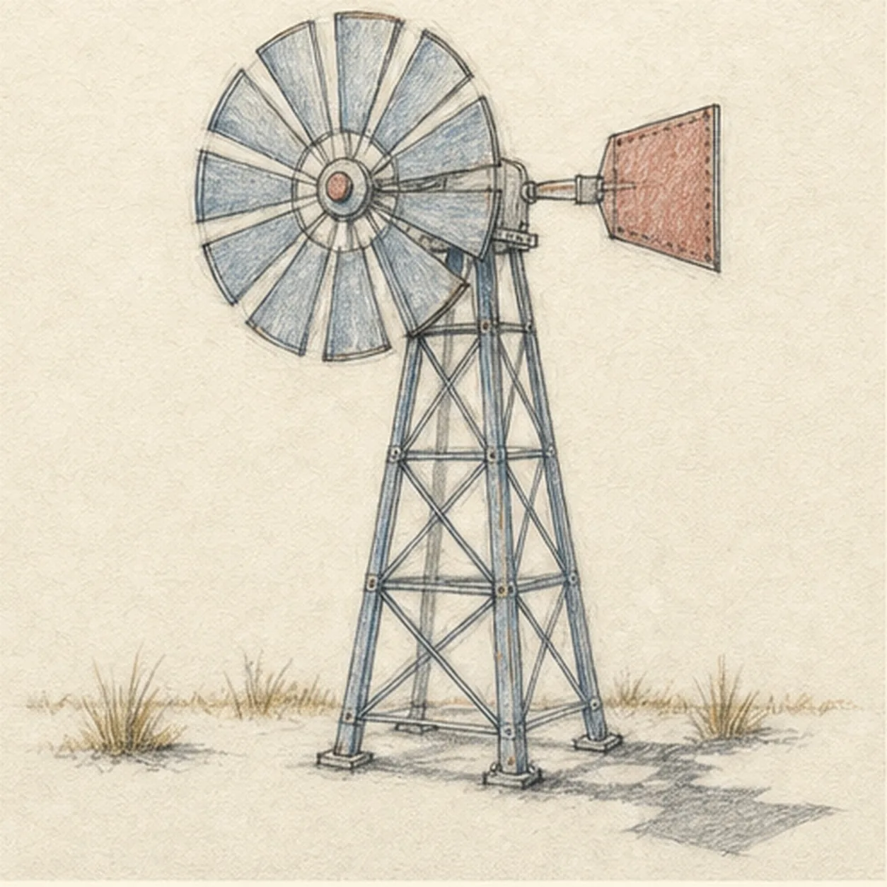

From the archive
Let's draw a farm windmill
Treat this as one small practice round: build the subject lightly, notice the shapes, then darken only the lines that help the finished sketch.
-
01

Set the windmill geometry
Draw a pale tapered tower trapezoid with four leg axes, then place one large rotor circle, a centered hub, the tail-arm axis and vane reserve, a low ground line, grass-cluster reserves, and a broken shadow footprint.
Sketch tip: Ghost the rotor circle from the shoulder, then compare its center with the tower's top. Keep the leg axes light and check the two empty wedges beside the tower so the structure does not lean by accident.
-
02

Build the tower and divide the wheel
Darken the center hub, rear tail arm and vane, narrow top gearbox, and four tapered tower legs, but leave the outer rotor circle pale. From the hub, map exactly twelve faint radial divisions to that guide.
Sketch tip: Quarter the pale circle first, then split each quarter into three light spokes. Count twelve before moving on, and keep these lines soft because they guide the blades rather than becoming a hard finished rim.
-
03

Shape the blades and braces
Widen each faint rotor division into one broad blade wedge, closing it with a short outer edge instead of tracing the whole circle. Then place clear X-braces between the established tower legs.
Sketch tip: Work around the wheel one wedge at a time and count all twelve. Let the pale circle disappear between the short blade edges, then compare the open paper shapes between the braces instead of forcing machine-perfect symmetry.
-
04

Add the farm hardware
Add one hub cap, short gearbox seams, tail-arm joints, tower foot plates, a low uneven grass line, several small grass tufts, and one broken cast shadow.
Sketch tip: Keep the hardware marks shorter and darker than the structural lines. Build the shadow outward from the four foot plates, letting it break before it becomes a smooth digital-looking block.
-
05

Shade the weathered materials
Model the established structure with graphite, add steel-blue pencil to the rotor and tower, rust red to the tail vane and hub cap, warm ochre to the grass, and preserve paper highlights.
Sketch tip: Pull color along each metal member rather than scribbling across the lattice. Leave pale channels between the blade spokes and lift the pencil before the paper tooth disappears.
-
06

Settle the prairie windmill
Strengthen the keeper contours and clarify the established twelve-blade rotor, hub, gearbox, tail vane, four-legged tower, braces, hardware, grass, restrained color, highlights, and broken shadow.
Sketch tip: Count twelve blades and trace all four tower legs to their foot plates, then stop while the graphite grain remains visible. Your metal colors and grass rhythm can vary while the same circle-and-tower construction stays useful.

![Handmade graphite and restrained colored-pencil sketch of one warm-ginger kitten seated in a three-quarter pose facing page left with exactly two triangular ears, two wide eyes focused on one dusty-teal yarn ball, one front paw raised over one loose strand, one front paw planted, two folded hind haunches, one curled tail with three broad tabby bands and a darker tip, three forehead stripes, sparse whiskers, tactile directional fur hatching, rose ear interiors and nose, open paper highlights, and one broken warm-gray ground shadow](../assets/kitten-batting-a-ball-of-yarn-finished-v1.webp)